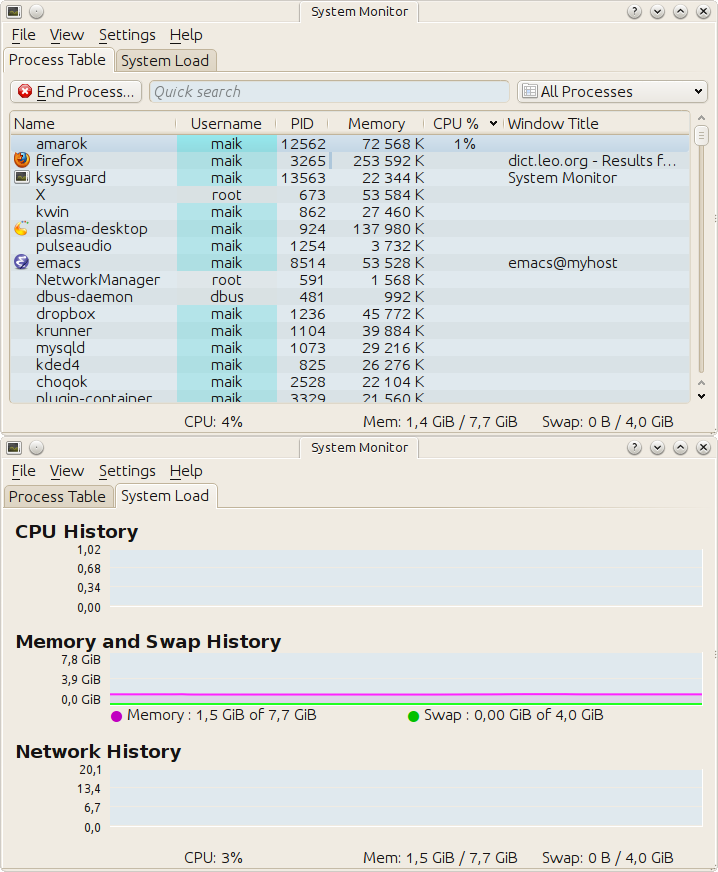
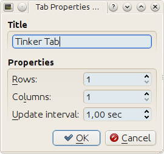
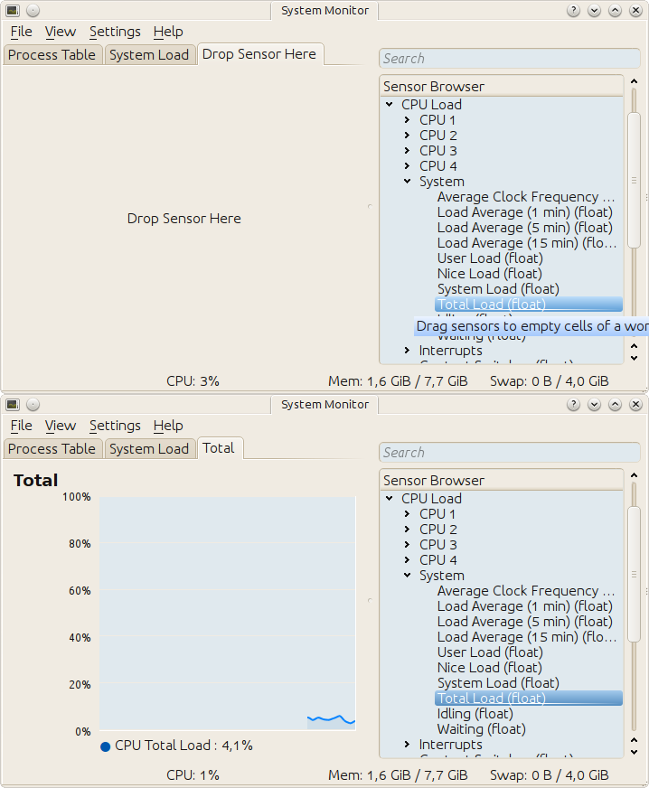
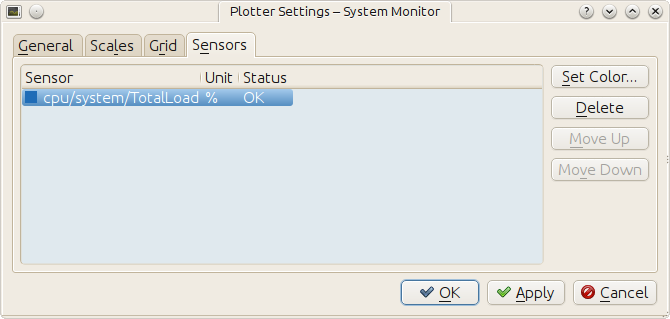
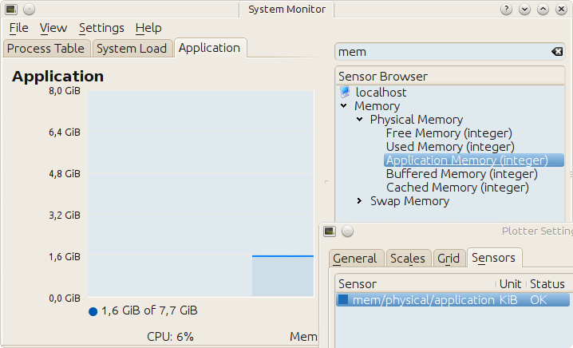
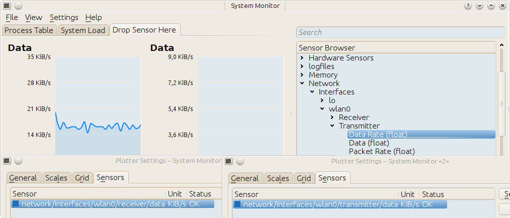
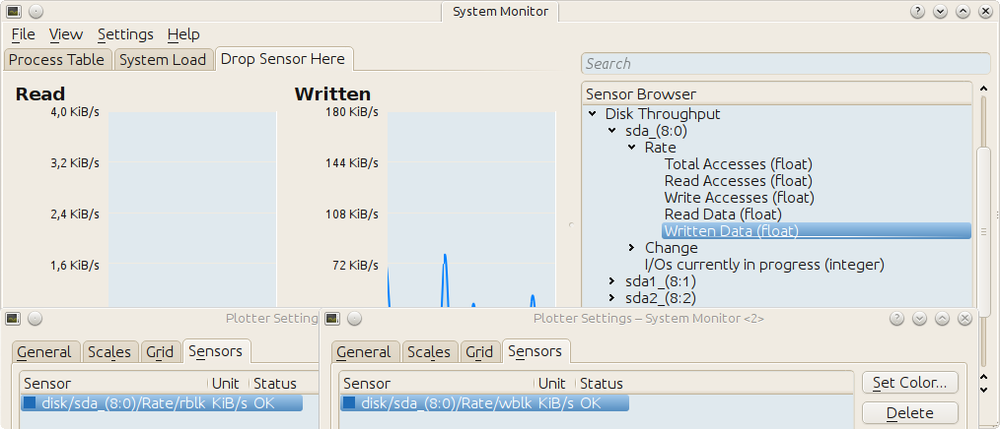

Data engines
Table of Contents
1 TODOs
1.1 Wording
I'm not happy with the wording. It feels like a mere collection of code snippets, glued together with some laconic sentences. The good thing that derives from this is the brevity. I like to keep that, but add a sensible flow.
2 Getting more than one shot
When plasma loads our applet, the main script is run exactly once! To get more than that, we have to convince plasma to give us additional cpu cycles. This is always done by asking for a periodic delivery of data.
3 A sink with a slot
To ask for data we first have to define an object that acts as the data sink.
What makes it a data sink is having a slot named dataUpdated.
var sink = { dataUpdated: function (name, data) { print("ping"); } };
The name of the sink Object is however arbitrary
var CatDog = { dataUpdated: function (name, data) { print("ping"); } };
We'll dicuss the content of the slot function's parameters name, data in a
bit.
4 Connecting the slot to a source
The inquery for data is formulates by connecting our sink to a source. A
plasma engine provides sources. They're connected to via their connectSource
method. The arguments this method takes are the name of the source, the sink
object and the desired interval length in which sink's dataUpdated slot
should be called.
var engine = dataEngine("SourcesServingEngine") var intervalInMilliSeconds = 1000; // one second engine.connectSource("SourceOfInterest", sink, intervalInMilliSeconds);
This code has a flaw however. The connection might fail because
- the source doesn't exist
- the sink object doesn't define the
dataUpdatedslot.
This flowing doesn't really handle these situation, but at least tells us about it.
var engine = dataEngine("SourcesServingEngine") var intervalInMilliSeconds = 1000; // one second if (! engine.connectSource("SourceOfInterest", sink, intervalInMilliSeconds) ) { print("connection attempt to SourceOfInterest in SourcesServingEngine failed D:"); }
To find a data engine and the sources it provides we gonna use
% plasmaengineexplorer

Plasma engine explorer
Image plasmaengineexplorer shows the source Local of the time data engine. This code uses it
var sink = { dataUpdated: function (name, data) { print("ping"); } }; var engine = dataEngine("time"); if ( engine.connectSource("Local", sink, 1000) ) { print("connection established"); } else { print("connection attempt failed"); } print("main.js ends here");
and results in
ping connection established main.js ends here ping ping ping
Note that besides the periodically calls by the data engine, dataUpdated is
called once when being connected via connectSource. Make sure that it's
already there, or the connection will fail as demonstrated by this code
var sink = {}; var engine = dataEngine("time"); if ( engine.connectSource("Local", sink, 1000) ) { print("connection established"); } else { print("connection attempt failed"); } sink.dataUpdated = function (name, data) { print("ping"); } print("main.js ends here");
which results in
% plasmoidviewer . connection attempt failed main.js ends here %
5 Exploring a data source
So far it is only confirmed that dataUpdated was called back by the data
engine. Now we take a look at the value of the parameters it is called with.
5.1 name
Consider this code
var sink = { dataUpdated: function (name, data) { print(name); } }; var engine = dataEngine("time"); if ( engine.connectSource("Local", sink, 1000) ) { print("connection established"); } else { print("connection attempt failed"); } print("main.js ends here");
which results in the following output
Local connection established main.js ends here Local Local ...
The content of name is the same as the one we gave to connectSource. This
becomes important when we subscribe a single sink to more than one data source.
var sink = { dataUpdated: function (name, data) { print(name); } }; var engine = dataEngine("time"); if ( engine.connectSource("Local", sink, 1000) ) { print("connection to 'Local' in 'time' established"); } else { print("connection attempt to 'Local' in 'time' failed"); } if ( engine.connectSource("Europe/London", sink, 1000) ) { print("connection to 'Europe/London' in 'time' established"); } else { print("connection attempt to 'Europe/London' in 'time' failed"); } print("main.js ends here");
% plasmoidviewer . Local connection to 'Local' in 'time' established Europe/London connection to 'Europe/London' in 'time' established main.js ends here Local Europe/London Local Europe/Londo
5.2 data
Every time the data engine sends its data, the output of this sink
var sink = { dataUpdated: function (name, data) { print("===== data ====="); for(var k in data) { print("key : " + k); print("data[key] : " + data[k]); print("typeof data[key] : " + typeof data[k]); print("----"); } } };
is similar to
===== data ===== key : Timezone Continent typeof data[key] : string data[key] : Europe ---- key : Offset typeof data[key] : number data[key] : 3600 ---- key : DateTime typeof data[key] : object data[key] : Sun Feb 12 2012 09:46:52 GMT+0100 (CET) ---- key : Timezone typeof data[key] : string data[key] : Europe/Berlin ---- key : Time typeof data[key] : object data[key] : 09:46:52 ---- key : Date typeof data[key] : object data[key] : Sun Feb 12 2012 00:00:00 GMT+0100 (CET) ---- key : Timezone City typeof data[key] : string data[key] : Berlin
The Offset looks off, doesn't it?. That's because its unit is seconds. My
time zone has an offset of
3600 s * 1 min
3600 s = -------------- = 60 min
60 s
60 min * 1 h
60 min = -------------- = 1 h .
60 min
If you compare this data with what is shown in plasmaengineexplorer, then you'll notice it being exactly the same, except for the actual point in time. The Type entry for each source in the image is the names of a Qt C++ data type. Some of them have an equivalent in JavaScript, like
QString<–>string.
For Qt data types that don't have an builtin equivalent in JavaScript we get an object
Lets have a peek into what one of these converted Qt types has to offer
var sink = { dataUpdated: function (name, data) { print("==== data ====="); var dateTime = data["DateTime"] print('<properties of data["DateTime"]'); for(var k in dateTime) { print("key : " + k); print('typeof dateTime[key] : ' + typeof dateTime[k]); print('dateTime[key] : ' + dateTime[k]); } print('</properties of data["DateTime"]'); } };
==== data ===== <properties of data["DateTime"] </properties of data["DateTime"]
Nothing? That is correct. These JavaScript shells around a C++ object only hand out a string representation of their value.
Though they are not showing up with the code above, these objects have the following methods
toString()toLocaleString()valueOf()hasOwnProperty(V)isPrototypeOf(V)propertyIsEnumerable(V)
The Qt docs just mention their existence
For real information head over to Mozilla
However, you probably only ever use toString().
var sink = { dataUpdated: function (name, data) { print("==== data ====="); var dateTime = data["DateTime"] print("typeof dateTime : " + typeof dateTime); print("typeof dateTime.toString : " + typeof dateTime.toString); print("typeof dateTime.toString() : " + typeof dateTime.toString()); print("dateTime.toString() : " + dateTime.toString()); } };
==== data ===== typeof dateTime : object typeof dateTime.toString : function typeof dateTime.toString() : string dateTime.toString() : Sun Feb 12 2012 11:45:39 GMT+0100 (CET)
6 The systemmonitor date engine
6.1 CPU load
6.1.1 The kde system monitor (aka. ksysguard)
Go and start kde's system monitor with
% ksysguard
Yes, ksysguard, not ksysmon. Makes sense, right? No it does not! I'm actually german and I bet my socks on this being a funny little translation error that sticked :P . However, lets take a look at it.

kde system monitor aka. ksysguard
The first tab displays the system processes with their properties., while the second one contains line graphs for certain values, among them the total cpu load. These two tabs predefined, you can't add or remove anything. This isn't the case for user defined tabs, so lets create one
- File -> New Tab…

Tinker Tab
To the right is the Sensor Browser. Expand CPU Load and in there System. Drag the Total Load(float) Item over to the tab interior and drop it. A popup appears, asking you how the stream of values should be displayed. Select LineGraph and be amazed.

Cpu load
You can try the other display types be right clicking the current display widget, select remove and drag over another item from the Sensor Browser. Mess around to your heart's content. Done? Remove the display widget if there is one and add again the line graph for Total Load(float). Right click the line graph and this time don't select Remove Display but Properties. The Sensors Tab in the windows that comes up shows the name of the sensor
/cpu/system/TotalLoad
Take a good look at it, we will soon see it again.

Cpu sensor
6.1.2 The systemmonitor data engine
Plasma fixed the translation error and calls the data engine that represents ksysguar systemmonitor. You can take a look what it has to offer by starting
% plasmaengineexplorer
and selecting it as Data Engine. What you'll see should look familar

systemmonitor : the system's total cpu load
That's right, there it is again
/cpu/system/TotalLoad
The name of the Sensor in ksysguard-cpu-total is the same as the
source name in the systemmonitor data engine. This is true for all sensors
you can find in ksysguard.
6.1.3 Enough pictures, code!
Without further ado, here the code which subscribes to the cpu load source
var sink = { dataUpdated: function (name, data) { print("==== data ====="); for(var k in data) { print("key : " + k); print('data[key] : ' + data[k]); print("---") } } }; var engine = dataEngine("systemmonitor"); if ( engine.connectSource("cpu/system/TotalLoad", sink, 1000) ) { print("connection established"); } else { print("connection attempt failed"); } print("main.js ends here");
and prints its content on the screen
==== data ===== key : type data[key] : float --- ==== data ===== key : units data[key] : % --- key : type data[key] : float --- key : value data[key] : 1.503759 --- key : min data[key] : 0 --- key : name data[key] : CPU Total Load --- key : max data[key] : 100
A nicer to look at interpretation is
var sink = { dataUpdated: function (name, data) { print(data["value"] + data["units"]); } };
connection established main.js ends here NaN 4.834606% 0.502513% 1.012658%
But wait, NaN? See also the first data block in the verbose output. It
stops after key type. Something is afoot and I do not know what. My guess
is that is a bug in the ksysguard component that nobody bothered to fix,
because it can easily be worked around like this
var sink = { dataUpdated: function (name, data) { // No data aviable. God knows why if (!data["value"]) { return; } print(data["value"] + data["units"]); } };
connection established main.js ends here 4.822335% 0.751880% 0.501253%
(TODO: poke #plasma on freenode about it).
When you put your applet into the panel, then space is precious. I'd argue that the decimal digits don't add enough imformation to be included. Use
to drop them
var sink = { dataUpdated: function (name, data) { // No data aviable. God knows why if (!data["value"]) { return; } print(parseInt(data["value"], 10) + data["units"]); } };
connection established main.js ends here 5% 2% 0%
6.2 Application memory
Same as for the cpu load

ksysguard : used application memory
Here code and output
var sink = { dataUpdated: function (name, data) { if (!data["value"]) { return; } print(parseInt(data["value"]) + data["units"]); } }; var engine = dataEngine("systemmonitor"); if ( engine.connectSource("mem/physical/application", sink, 1000) ) { print("connection established"); } else { print("connection attempt failed"); } print("main.js ends here");
connection established main.js ends here 1731100KB 1730956KB 1732552KB
Hm, these values are rather big. Lets convert them from KB to MB
var sink = { dataUpdated: function (name, data) { if (!data["value"]) { return; } print(parseInt(data["value"] / 1024, 10) + "MB"); } }; var engine = dataEngine("systemmonitor"); if ( engine.connectSource("mem/physical/application", sink, 1000) ) { print("connection established"); } else { print("connection attempt failed"); } print("main.js ends here");
connection established main.js ends here 1665MB 1665MB 1666MB
Much better!
6.3 Wlan
The follow image shows the source names for wifi up and down rates.

ksysguard : wlan down and up rate
Note two things: Firstly, why didn't I put both sensors in the same line graph? It used to work, but doesn't in kde-4.8.0. Secondly, there are not one but two sources we're interested in.
6.3.1 Each of the two source by itself
The first source is the rate with which the bits are dripping out of our wlan cable.
var sink = { dataUpdated: function (name, data) { if (!data["value"]) { return; } print(data["value"] + data["units"]); } }; var engine = dataEngine("systemmonitor"); if ( engine.connectSource("network/interfaces/wlan0/receiver/data", sink, 1000) ) { print("connection established"); } else { print("connection attempt failed"); } print("main.js ends here");
connection established main.js ends here 124KB/s 97KB/s 131KB/s
The second one is the rate with which the FBI is uploading your files onto their servers
var sink = { dataUpdated: function (name, data) { if (!data["value"]) { return; } print(data["value"] + data["units"]); } }; var engine = dataEngine("systemmonitor"); if ( engine.connectSource("network/interfaces/wlan0/transmitter/data", sink, 1000) ) { print("connection established"); } else { print("connection attempt failed"); } print("main.js ends here");
connection established main.js ends here 5KB/s 6KB/s 6KB/s
slowly but steady >:]
6.3.2 Joining the data
The goal is to print both values on the screen each time one of the sources was updated:
down: 91KB/s up: 5KB/s down: 91KB/s up: 6KB/s down: 147KB/s up: 6KB/s
But there is a problem. When yource A is updated, we don't have the values of source B and vice versa. The solution: a cache.
var sink = (function () { var obj = {} obj.sourceUp = "network/interfaces/wlan0/transmitter/data"; obj.sourceDown = "network/interfaces/wlan0/receiver/data"; obj.cache = { up: {value: "----", units: "KB/s"}, down: {value: "----", units: "KB/s"} }; obj.dataUpdated = function (name, data) { if (!data["value"]) { return; } if (name == this.sourceDown) { this.cache.down = data; } else if (name == this.sourceUp) { this.cache.up = data; } var msg = "down: " + this.cache.down["value"] + this.cache.down["units"]; msg += " "; msg += "up: " + this.cache.up["value"] + this.cache.up["units"]; print(msg); } return obj; })(); var engine = dataEngine("systemmonitor"); if ( engine.connectSource(sink.sourceDown, sink, 1000) ) { print("connection to '" + sink.sourceDown + "' established"); } else { print("connection attempt to '" + sink.sourceDown + "' failed"); } if ( engine.connectSource(sink.sourceUp, sink, 1000) ) { print("connection to '" + sink.sourceUp + "' established"); } else { print("connection attempt to '" + sink.sourceUp + "' failed"); } print("main.js ends here");
connection to 'network/interfaces/wlan0/receiver/data' established connection to 'network/interfaces/wlan0/transmitter/data' established main.js ends here down: ----KB/s up: 5KB/s down: 105KB/s up: 5KB/s down: 105KB/s up: 5KB/s down: 91KB/s up: 5KB/s down: 91KB/s up: 6KB/s down: 147KB/s up: 6KB/s
6.4 Harddisk
This equivalent to the wlan case.

ksysguard : sda read and write rate
var sink = (function () { var obj = {} obj.sourceRead = "disk/sda_(8:0)/Rate/wblk"; obj.sourceWrite = "disk/sda_(8:0)/Rate/rblk"; obj.cache = { read: {value: "----", units: "KB/s"}, write: {value: "----", units: "KB/s"} }; obj.dataUpdated = function (name, data) { if (!data["value"]) { return; } if (name == this.sourceRead) { this.cache.read = data; this.cache.read["value"] = parseInt(data["value"], 10); } else if (name == this.sourceWrite) { this.cache.write = data; this.cache.write["value"] = parseInt(data["value"], 10); } var msg = "read: " + this.cache.read["value"] + this.cache.read["units"]; msg += " "; msg += "write: " + this.cache.write["value"] + this.cache.write["units"]; print(msg); } return obj; })(); var engine = dataEngine("systemmonitor"); if ( engine.connectSource(sink.sourceRead, sink, 1000) ) { print("connection to '" + sink.sourceRead + "' established"); } else { print("connection attempt to '" + sink.sourceRead + "' failed"); } if ( engine.connectSource(sink.sourceWrite, sink, 1000) ) { print("connection to '" + sink.sourceWrite + "' established"); } else { print("connection attempt to '" + sink.sourceWrite + "' failed"); } print("main.js ends here");
connection to 'disk/sda_(8:0)/Rate/wblk' established connection to 'disk/sda_(8:0)/Rate/rblk' established main.js ends here read: ----KB/s write: 0KB/s read: 0KB/s write: 0KB/s read: 0KB/s write: 0KB/s